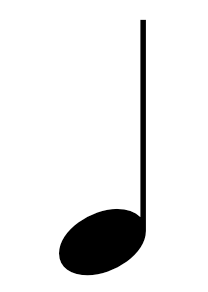

Welcome to CronuMusic
This is a website designed to group many different elements of music theory
and how it changed over time into one site. It goes over a plethora of things, from
the different music periods to voice leading and chord progression.
The History page goes over the 4.5 periods of music since the late 17th century, Going over
the Baroque, Classic, Romantic, Impressionist, and Contemporary periods, their styles, and their
instrumentation. Learn about the methods of Bach, Beethoven, Liszt, and many other composers.

The Basics page goes over basics of music theory, starting at introducing the grand staff and going to
(I have no idea! Music theory is nearly endless). Become well-versed in note durations, pitches, chord and melody progressions, structures, forms, and
many other awesome things!